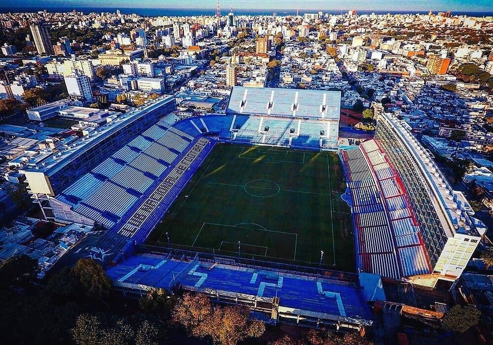

Estadio Gran Parque Central
El Gran Parque Central es el Primer Estadio de la Copa del Mundo. Es propiedad del Club Nacional de Football y se ubica en el barrio La Blanqueada de Montevideo, Uruguay. Construido en 1900, es el estadio más antiguo de América y el decimosexto de todo el mundo. Es donde Nacional juega sus partidos de local y acrecienta su mística ganadora.
